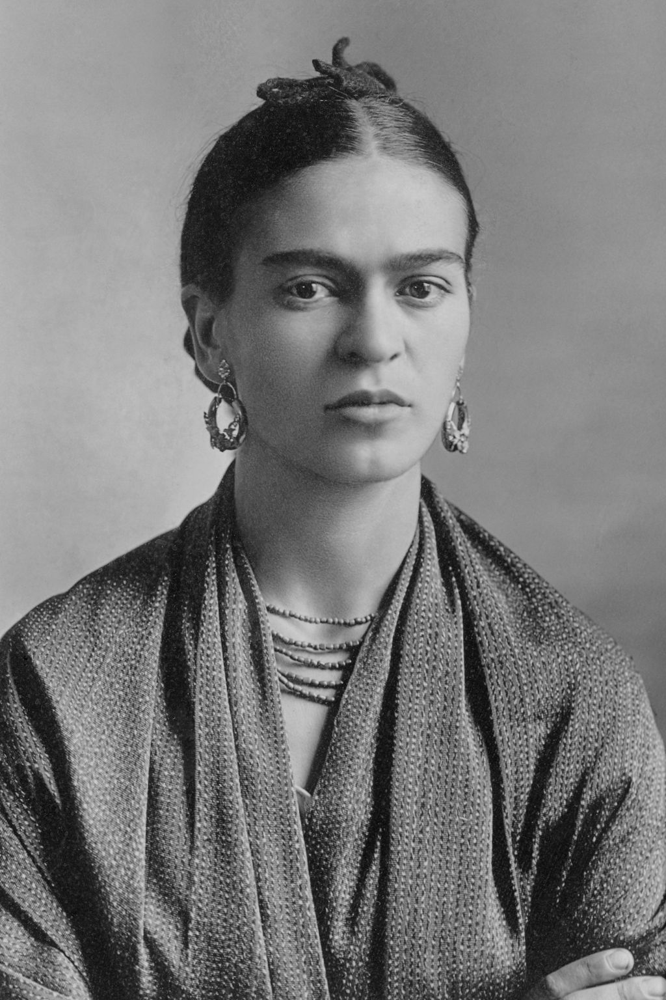

Frida Kahlo

Artist & Revolutionist
- Born to a German father and a mestiza mother, Kahlo spent most of her childhood and adult life at La Casa Azul, her family home in Coyoacán – now publicly accessible as the Frida Kahlo Museum.
- Although she was disabled by polio as a child, Kahlo had been a promising student headed for medical school until she suffered a bus accident at the age of eighteen, which caused her lifelong pain and medical problems.
- During her recovery she returned to her childhood hobby of art with the idea of becoming an artist.
- Kahlo's interests in politics and art led her to join the Mexican Communist Party in 1927,[1] through which she met fellow Mexican artist Diego Rivera. The couple married in 1929,[1][4] and spent the late 1920s and early 1930s travelling in Mexico and the United States together.
- During this time, she developed her artistic style, drawing her main inspiration from Mexican folk culture, and painted mostly small self-portraits which mixed elements from pre-Columbian and Catholic beliefs.
- Her paintings raised the interest of Surrealist artist André Breton, who arranged for Kahlo's first solo exhibition at the Julien Levy Gallery in New York in 1938; the exhibition was a success, and was followed by another in Paris in 1939.
- Kahlo's work as an artist remained relatively unknown until the late 1970s, when her work was rediscovered by art historians and political activists.
- By the early 1990s, she had become not only a recognized figure in art history, but also regarded as an icon for Chicanos, the feminism movement and the LGBTQ+ movement. Kahlo's work has been celebrated internationally as emblematic of Mexican national and indigenous traditions and by feminists for what is seen as its uncompromising depiction of the female experience and form.
- Diead at age 47
- She wanted to be a doctor.
"They thought I was a Surrealist, but I wasn’t. I never painted dreams. I painted my own reality." -Frida Kahlo
If you have time you should read more about the incredible Frida Kahlo